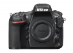
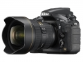
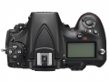
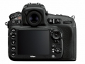

器材库 > 35mm画幅可换镜头数码相机 > D810A

规格总览
产品类型
35mm画幅可换镜头数码相机
发布日期
2015-02-10
厂家推荐价格
420,000.00 （日元）
影像规格
影像传感器
CMOS
影像传感器尺寸
约35.9mm x 24.0mm
总像素
约3709万
有效像素
约3635万
影像处理器
EXPEED 4
低通滤镜
无低通滤波器
最大解像度
7360 x 4912
静态图像尺寸
FX 影像区域，7360×4912,5520×3680,3680×2456 1.2X 影像区域，6144×4080,4608×3056,3072×2040 DX 影像区域，4800×3200,3600×2400,2400×1600 5:4 影像区域 6144×4912,4608×3680,3072×2456
静态图像格式
JPEG, NEF(RAW), NEF(RAW)+JPEG
静态图像质量
NEF（RAW）：12或14位，无损压缩、压缩或未压缩；JPEG：兼容JPEG-Baseline，压缩比（约）为精细（1：4），标准（1：8），基本（1：16）（文件大小优先）
短片尺寸
1920×1080；60p（逐行）、50p、30p、25p、24p 1280×720；60p、50p 60p、50p、30p、25p及24p时的实际帧频分别为59.94、50、29.97、25及23.976幅/秒；选项同时支持高和标准图像品质
短片格式
MPEG4-AVC/H.264
短片音效
线性PCM
除尘系统
清洁影像传感器、图像除尘参考数据（需要“捕影工匠”软件）
镜头和对焦
镜头卡口
Nikon F
兼容镜头
兼容AF尼克尔镜头，包括G型、E型、D型镜头（PC镜头受到某些限制）、DX镜头（使用DX 24×16 1.5×影像区域）、AI-P尼克尔镜头以及非CPU AI镜头（仅限于曝光模式A和M）。不能使用IX尼克尔镜头、用于F3AF的镜头以及非AI镜头。
对焦系统类型
Multi-CAM 3500FX
对焦点
51个对焦点（包括15个十字型感应器；11个感应器支持f/8）
对焦模式
单点AF、动态区域AF、3D跟踪和自动区域AF、组区域AF、MF
焦点锁定
半按快门释放按钮（单次伺服AF）或按下AE-L/AF-L按钮可锁定对焦
AF辅助灯
有
手动对焦
支持
曝光控制
测光系统
使用约91K（91000）像素RGB感应器的TTL曝光测光
测光模式
中央重点测光, 点测光, 矩阵测光
测光范围
0EV~20EV
曝光模式
P（程序自动曝光）, A（光圈优先自动曝光）, S（快门速度优先自动曝光）, M（手动测光曝光）
快门类型
电子控制纵走式焦平面机械快门；电子前帘快门（适用于反光板弹起释放模式）
快门速度
1/8000-30秒（以1/3、1/2或1EV为步长进行微调）、B门、遥控B门、X250、 M*模式：4, 5, 8, 10, 15, 20, 30, 60, 120, 180, 240, 300, 600或900秒，B门及遥控B门可用
闪光同步速度
X=1/250秒
曝光补偿
±5EV以以1/3、1/2或1EV级调整
自动曝光锁
有
自动包围曝光
拍摄2至9幅，以1/3、1/2、2/3或1EV为步长；拍摄2至5幅，以2或3EV为步长
ISO感光度
ISO 64-12800，以1/3、1/2或1EV为步长进行微调。可在ISO 64的基础上约减少0.3、0.5、0.7或1EV（相当于ISO 32），或者在ISO 12800的基础上约增加0.3、0.5、0.7、1或2EV（相当于ISO 51200）；自动ISO感光度控制可用
白平衡
日光, 白炽灯, 闪光灯, 色温调节, 阴天, 荧光灯, 阴影, 手动白平衡, 晴天
自拍
10秒, 2秒, 5秒, 20秒, 以0.5、1、2 或3 秒为间隔曝光1~9 次
连拍
使用FX格式时，连拍速度可达约5幅/秒；使用DX格式时，连拍速度可达约7幅/秒
闪光灯
内置闪光灯
弹出式
闪光指数
约12，手动闪光时指数为12（m，ISO 100，20℃）
闪光补偿
-3 至 +1EV以1/3、1/2或1EV级调整
取景器/显示屏
取景器
眼平五棱取景器
取景范围
100%
取景放大倍率
（50mm f/1.4镜头设为无穷远；屈光度为-1.0m-1）约0.7倍倍
屈光度调节范围
-3至+1m⁻1
对焦屏
B型光亮磨砂对焦屏Mark VIII，带有AF区域框（可显示取景网格）
反光镜
即时返回型
景深预视
有
LCD类型
TFT LCD
LCD尺寸
3.2英寸
LCD像素
约122.9万
视野率
100%
Live View
有
Live View 显示
即时取景预览功能（当指定曝光时间超过30秒时，将显示以30秒快门速度拍摄时的预览）
文件输入/输出
存储卡
CF, SD/SDHC, SDXC
数据接口
USB3.0 (micro B)
视频/音频接口
C型HDMI接口
电源
电池
一块EN-EL15锂离子可充电电池
机身规格
材质
镁合金机身
颜色
黑色
尺寸
约146×123×81.5mm
重量
带电池和SD存储卡，但不包括机身盖约980g；仅照相机机身约880g
其它
配件端口
脚架螺丝孔, 麦克风输入端子
工作温度
0–40℃
工作湿度
85或以下%
附件
锂离子可充电电池 EN-EL15、电池充电器 MH-25a、USB线UC-E22、相机背带AN-DC16、机身盖 BF-1B、接目镜DK-17、USB线夹、HDMI线夹、LCD显示屏盖 BM-12
该产品暂无存档的网友点评
产品图 / 样片



评测 / 相关文章
- 详细内容 （存档）